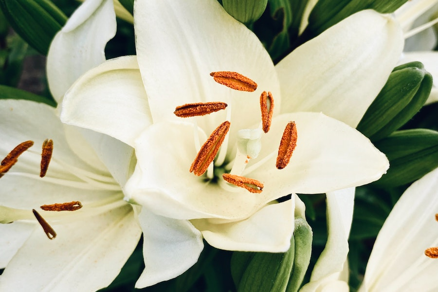
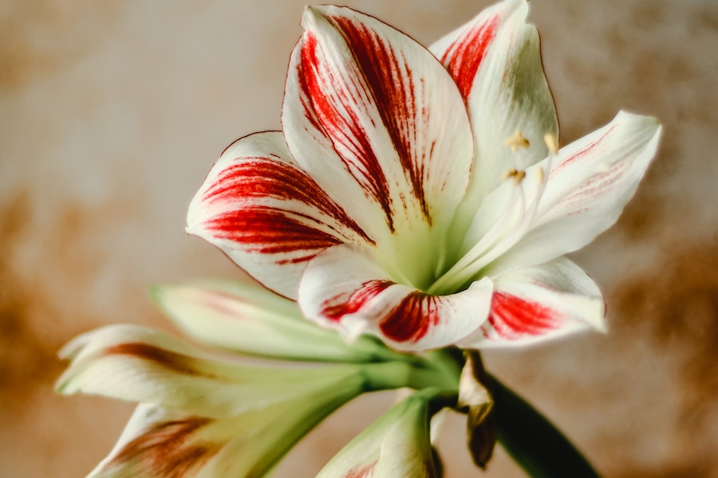
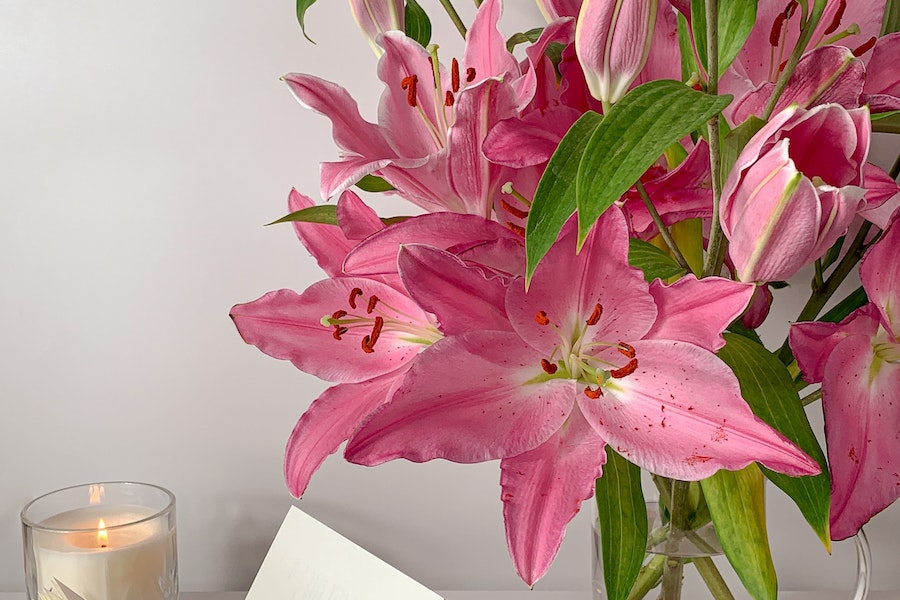

Imagens




Os lírios são originários do Hemisfério Norte e
são encontrados em várias
partes da Europa, Ásia e América do Norte.
Eles são valorizados por sua
aparência graciosa e aroma agradável.
Existem mais de 100 espécies diferentes de lírios, e
inúmeras variedades e
híbridos foram
cultivados ao longo dos anos. Alguns dos lírios mais conhecidos
incluem
o lírio asiático, lírio oriental, lírio trombeta e lírio de água.
Os lírios são caracterizados por suas pétalas grandes e elegantes,
que podem
ser encontrada sem uma variedade de cores, incluindo branco, rosa,
amarelo,
laranja e vermelho. Muitos lírios também têm marcas e manchas
distintas
em suas pétalas.
Muitas variedades de lírios têm uma fragrância doce e
envolvente que é
apreciada em arranjos florais e perfumes.
Os lírios têm significados variados em diferentes culturas.
Eles são
frequentemente associados à pureza, renascimento, virtude e amor.
Na cultura cristã,
os lírios são um símbolo da Virgem Maria.
Lírios são perenes e crescem a partir de bulbos. Eles são adequados para
jardins e
canteiros de flores, prosperando em áreas ensolaradas com solo
bem drenado.
Os lírios atraem polinizadores, como abelhas e borboletas, devido à sua fragrância e néctar.
Os lírios têm um ciclo de vida que inclui
crescimento a partir de bulbos, floração
na primavera ou verão e, eventualmente, a formação de sementes.
Lírios são frequentemente usados em arranjos florais devido à sua
elegância e
fragrância. Eles são populares em buquês de casamento e decorações de eventos especiais.
Em algumas culturas, os lírios são associados a crenças e superstições.
Por exemplo,
em algumas culturas asiáticas, os lírios brancos são usados em funerais.
Alguns tipos de lírios, como o lírio-do-vale,
são tóxicos para animais de estimação,
como gatos. É importante ter cuidado ao tê-los em casas com animais de estimação.
Lírios têm uma vida útil relativamente longa em vasos e arranjos florais,
desde que
a água seja trocada regularmente e os caules sejam cortados em ângulo.
Além dos lírios terrestres, existem lírios aquáticos,
como os lírios-d'água, que têm
folhas flutuantes e flores espetaculares que adornam lagoas e lagos.
Buquês de lírios frescos podem ser encontrados em floriculturas, mercados e
lojas de flores por
preços que variam de R$ 50 a R$ 200 ou mais, dependendo
do tamanho do buquê, da quantidade de flores e da região.
Vasos de lírios em floriculturas ou supermercados podem custar entre
R$ 30 e R$ 100,
dependendo do tamanho do vaso e da qualidade das plantas.
Se você preferir cultivar seus próprios lírios a partir de sementes, pacotes
de sementes de lírio podem
ser encontrados por preços que variam de
R$ 10 a R$ 30, dependendo da quantidade de sementes no pacote.
Mudinhas de lírio podem ser adquiridas por preços que variam de
R$ 5 a R$ 20
por muda em viveiros e lojas de jardinagem.
Cultivar lírios a partir de bulbos é uma opção econômica,
uma vez que
você investe inicialmente no plantio e pode desfrutar das flores ano após ano.
Em ocasiões especiais, como casamentos e eventos, os preços dos lírios
podem ser mais elevados devido à demanda específica e ao
design personalizado dos arranjos florais.
Algumas variedades de lírios raros ou híbridos exclusivos podem
ter preços
ligeiramente mais altos devido à sua exclusividade.
Lírios estão disponíveis em uma variedade de cores e formas. Lírios orientais,
por exemplo, costumam ter preços mais elevados devido à sua beleza e fragrância distintas.
Lembre-se de que, ao comprar lírios em vasos, você também pode precisar considerar
os custos contínuos de cuidados, como rega e fertilização, para manter as plantas saudáveis e floridas.